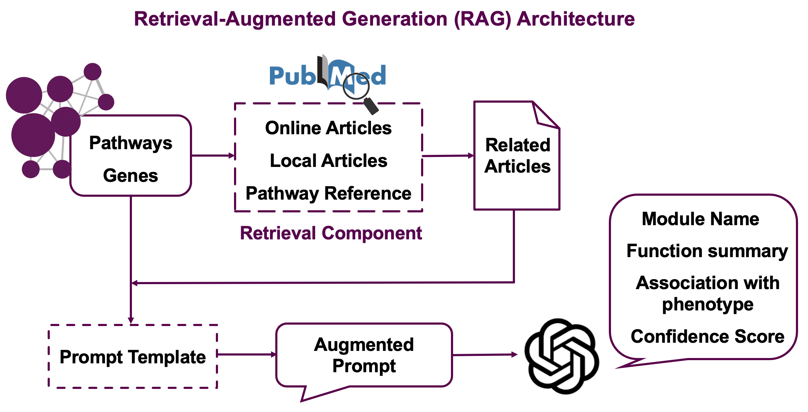

library(mapa)7 Functional Module Annotation
The llm_interpret_module() function provides AI-powered interpretation of functional modules by integrating Large Language Models (LLMs) with a Retrieval-Augmented Generation (RAG) strategy. This approach combines pathway information, scientific literature, and advanced text analysis to generate meaningful names and summaries for your functional modules.
Important
Prerequisites: Before running LLM interpretation, ensure you have completed functional module generation using get_functional_modules() as described in previous chapters. The enriched_functional_modules object used in this chapter should be the output from the module clustering step.
7.1 Overview
The LLM interpretation process integrates multiple information sources to provide comprehensive module annotations:
Information Sources:
- Pathway descriptions from GO, KEGG, Reactome, and metabolite databases
- Gene/metabolite names from your input data
- Scientific literature retrieved from PubMed based on pathway and molecule relevance
- Local documents (optional) - your own research papers or relevant literature
Analysis Pipeline:
- Information Extraction: Extracts pathway descriptions and molecule information
- Literature Retrieval: Searches PubMed for relevant scientific papers
- RAG Strategy: Uses embeddings to find and rank the most relevant literature, see Section 7.2
- LLM Generation: Generates biological module names and research summaries
This approach leverages both structured biological knowledge and cutting-edge research to provide contextually rich interpretations of your functional modules.
7.2 Understanding the RAG Strategy

The Retrieval-Augmented Generation (RAG) strategy works in several stages:
Stage 1: Literature Search
- Searches PubMed using pathway names and gene/metabolite information
- Retrieves abstracts and titles for relevant papers
- Includes reference papers cited in pathway databases
Stage 2: Embedding-based Similarity
- Generates text embeddings for module descriptions (pathways + molecules)
- Calculates similarity between module embeddings and paper abstracts
- Filters top papers based on cosine similarity scores
Stage 3: GPT-powered Reranking
- Uses LLM to assess relevance of each paper to the specific module by assigning relevance scores (0-1) where 1 indicates high relevance to module pathways and molecules
- Select the most informative literature for final interpretation
Stage 4: Final Generation
- Combines module information with top-ranked papers
- Generates biologically meaningful module names
- Produces research summaries highlighting current knowledge
- Assigns confidence scores (0-1) reflecting LLM’s assessment of interpretation quality based on available evidence. High confidence means strong literature support and clear biological coherence
This multi-stage approach ensures that generated annotations are both scientifically accurate and contextually relevant.
7.3 Basic Usage
Important
Highly Important: Please ensure the embedding_output_dir you choose is completely empty, since llm_interpret_module() will clear the directory first.
llm_interpreted_modules <-
llm_interpret_module(
object = functional_modules,
llm_model = "gpt-4o-mini-2024-07-18",
embedding_model = "text-embedding-3-small",
api_key = "your_openai_api_key",
embedding_output_dir = "embedding_output/", # Output directory to store embeddings generated during analysis
module_content_number_cutoff = 1,
orgdb = org.Hs.eg.db # Necessary for gene annotation
)
# |============================================================================================================================| 100%, Elapsed 00:42
# Processing module: Functional_module_2
# Including PID number: 70
# |============================================================================================================================| 100%, Elapsed 00:07
# ...
# Processing module 1/10: Functional_module_2
# - Generating module embeddings...
# - Reading and calculating PubMed similarity...
# - Local documents not found, skipping local similarity calculation
# - Reading document content...
# - Processing document content using GPT...
# |============================================================================================================================| 100%, Elapsed 00:35
# - Filtering the most relevant results...
# Functional_module_2 processing completed
# ...
# All modules processing completed!
# Start to generate name and summary for functional modules ...
# Donemet_llm_interpreted_modules <-
llm_interpret_module(
object = met_functional_modules,
llm_model = "gpt-4o-mini-2024-07-18",
embedding_model = "text-embedding-3-small",
api_key = "your_openai_api_key",
embedding_output_dir = "embedding_output/",
module_content_number_cutoff = 1
)
# |====================================| 100%, Elapsed 00:02
# Processing module: Functional_module_2
# Including PID number: 20
# |====================================| 100%, Elapsed 00:04
# Processing module: Functional_module_1
# Including PID number: 15
# |====================================| 100%, Elapsed 00:08
# Starting to process all modules...
# ...
# Processing module 1/2: Functional_module_2
# - Generating module embeddings...
# - Reading and calculating PubMed similarity...
# - Local documents not found, skipping local similarity calculation
# - Reading document content...
# - Processing document content using GPT...
# |====================================| 100%, Elapsed 00:19
# - Filtering the most relevant results...
# Functional_module_2 processing completed
# ...
# Processing module 2/2: Functional_module_1
# - Generating module embeddings...
# - Reading and calculating PubMed similarity...
# - Local documents not found, skipping local similarity calculation
# - Reading document content...
# - Processing document content using GPT...
# |====================================| 100%, Elapsed 00:16
# - Filtering the most relevant results...
# Functional_module_1 processing completed
# ...
# All modules processing completed!
# Start to generate name and summary for functional modules ...
# Done7.4 Key Parameters
7.4.1 LLM and API Settings
| Parameter | Description | Default | Notes |
|---|---|---|---|
llm_model |
GPT model for text generation | "gpt-4o-mini-2024-07-18" |
OpenAI, Google, SilisonFlow |
embedding_model |
Model for text embeddings | "text-embedding-3-small" |
Used for document similarity |
api_key |
API key | Required | Store securely, never commit to version control |
7.4.2 Analysis Control
| Parameter | Description | Default | Use Case |
|---|---|---|---|
module_content_number_cutoff |
Minimum pathways per module | 1 | Filter small modules to focus on substantial ones |
years |
Years to search back in PubMed | 5 | Balance between recent findings and comprehensive coverage |
retmax |
Max papers per PubMed search | 10 | Control API usage and processing time |
similarity_filter_num |
Papers kept after similarity ranking | 20 | First-stage filtering based on text similarity |
GPT_filter_num |
Papers kept after GPT ranking | 5 | Final selection of most relevant papers |
Note
API Usage & Processing Time: Each module requires multiple API calls (embedding + LLM generation), with costs scaling by number of modules and literature volume, so consider using module_content_number_cutoff to focus on important modules. Typical processing takes 2-5 minutes per module, with time increasing for more literature and larger modules, though progress is displayed during processing.
7.4.3 Optional Enhancements
| Parameter | Description | Default | Benefits |
|---|---|---|---|
phenotype |
Disease/condition context | NULL |
Adds disease-specific interpretation |
local_corpus_dir |
Local directory with your own PDF files | NULL |
Incorporates your own research or relevant literature to enhance the interpretation |
output_prompt |
Include prompts in results | TRUE |
Useful for understanding AI reasoning |
7.5 Results Interpretation
After running LLM interpretation, examine the results:
# View analysis summary
llm_interpreted_modules
# --------------------
# Analysis method: enrich_pathway
# --------------------
# -----------Variable information------------
# 119 features/markers in total
# -----------Enrichment results and modules of genes------------
# -----------GO------------
# 1025 GO terms with p.adjust < 0.05
# 250 GO modules
# -----------KEGG------------
# 48 KEGG pathways with p.adjust < 0.05
# 29 KEGG modules
# -----------Reactome------------
# 48 Reactome pathways with p.adjust < 0.05
# 13 Reactome modules
# -----------Enrichment results and modules of metabolites------------
# -----------HMDB------------
# No HMDB results
# No HMDB modules
# -----------KEGG Metabolite------------
# No KEGG metabolite results
# No KEGG modules
# -----------Functional modules------------
# 158 Functional modules
# -----------LLM module interpretation------------
# 10 LLM interpreted modules
# --------------------
# Processing information
# 4 processings in total
# enrich_pathway ----------
# Package Function.used Time
# 1 mapa enrich_pathway() 2025-06-10 10:50:36
# merge_pathways ----------
# Package Function.used Time
# 1 mapa merge_pathways() 2025-06-10 10:57:22
# merge_modules ----------
# Package Function.used Time
# 1 mapa merge_modules() 2025-06-10 10:58:25
# llm_interpret_module ----------
# Package Function.used Time
# 1 mapa llm_interpret_module() 2025-06-10 14:24:477.5.1 Updated Functional Module Results
The functional module results are automatically updated with a new column llm_module_name, which is the LLM-generated names:
# View updated results with LLM names
head(llm_interpreted_modules@merged_module$functional_module_result)Key result columns:
- llm_module_name: AI-generated biological module name
- module_annotation: Original representative annotation (fallback if LLM interpretation unavailable)
7.5.2 Result Components
For each interpreted module, the results include:
# Core interpretation results of a interpreted module
module_result <- llm_interpreted_modules@llm_module_interpretation$Functional_module_2
# Module name generated by LLM
module_name <- module_result$generated_name$module_name
# Summary of current research
module_summary <- module_result$generated_name$summary
# Confidence score (0-1)
confidence_score <- module_result$generated_name$confidence_scoreWhen phenotype parameter was specified, result contains phenotype-specific interpretation.
module_result <- llm_interpreted_modules@llm_module_interpretation$Functional_module_2
phenotype_result <- module_result$generated_name$phenotype_analysis# Papers used for interpretation
module_result <- llm_interpreted_modules@llm_module_interpretation$Functional_module_2
related_papers <- module_result$related_paper
# Access individual papers
paper1 <- related_papers[[1]]
paper1$title # Paper title and PubMedID
# [1] "Modulation of Kit/stem cell factor receptor-induced signaling by protein kinase C. (PubMedID:7520444)"
paper1$relevance_score # Relevance score assigned by GPT
# [1] 0.9
paper1$cleaned_text # Cleaned abstract text
# [1] "The Kit/stem cell factor receptor (Kit/SCF-R) is a transmembrane tyrosine kinase receptor of importance for the normal development of hemopoietic cells, melanoblasts, and germ cells. We recently reported that protein kinase C (PKC) is involved in a negative feedback loop regulating the Kit/SCF-R by direct phosphorylation on serine residues in the receptor... In conclusion, SCF-induced PI-3'-kinase activation paralleled the increased SCF-induced mitogenicity after inhibition of PKC."If output_prompt = TRUE, results contains the exact prompt sent to the LLM for transparency:
module_result <- llm_interpreted_modules@llm_module_interpretation$Functional_module_2
prompt_info <- module_result$generated_name$prompt7.6 Best Practices
- Start Small: Begin with a subset of modules to estimate costs and processing time
- Optimize Parameters: Adjust filtering parameters based on your module complexity
- Use Phenotype Context: Specify relevant diseases/conditions for more targeted interpretations
- Include Local Literature: Add your own papers for domain-specific insights
- Review Results: Examine confidence scores and retrieved literature quality
- Iterate: Refine parameters based on initial results
7.7 Next Steps
Continue to Data Visualization to create informative plots showcasing your LLM-interpreted modules.